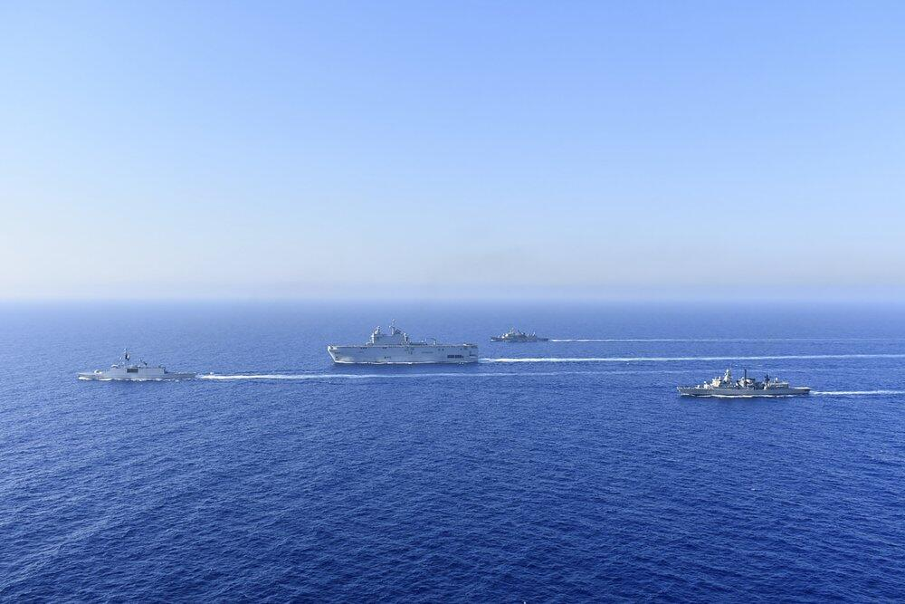

Headlines
On April 15, when Greek Foreign Minister Nikos Dendias was in Ankara for talks with his Turkish counterpart, Mevlüt Çavuşoğlu, to defuse the tension and start a new reconciliation process with Turkey, Greece announced a three-day NAVTEX (notification to sailors), informing that France’s “L’Atalante” ship would conduct researches in the south of Crete and Rhodes islands in the eastern Mediterranean. In an immediate response, Turkey announced a counter-NAVTEX, stressing that the area designated by Greece was part of Turkey’s continental shelf and that Greece had no authority to issue any NAVTEX concerning this particular zone.Nevertheless, L’Atalante, accompanied by the Greek frigate “Elli,” entered the Turkish continental shelf despite the Turkish NAVTEX on April 17. According to the Greek media, the two Turkish frigates, which were around this area, urged both the Greek frigate and French vessel to immediately leave the area. The French vessel argued that it was in international waters and it does not need to take permission to sail. The standoff did not last long as the Greek frigate and the French ship left the area. L’Atalante continued its researches outside the Turkish continental shelf. Turkey and Greece have long been in a dispute over the overlapping continental shelf claims in the eastern Mediterranean. They have recently resumed technical talks for the resolution of their arguments accompanied by a new political dialogue. Dendias and Çavuşoğlu discussed all the matters on their agenda on April 15, although the Greek top diplomat’s aggressive language and accusations cast a shadow on the talks.